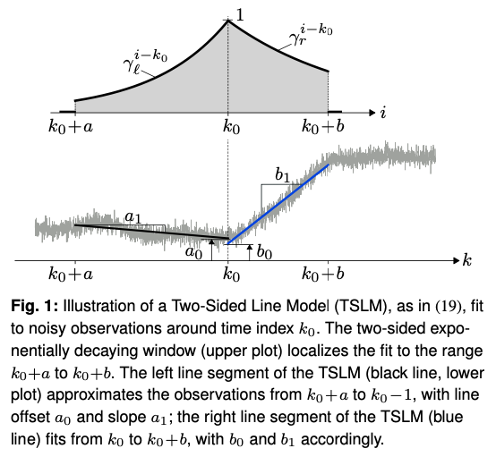
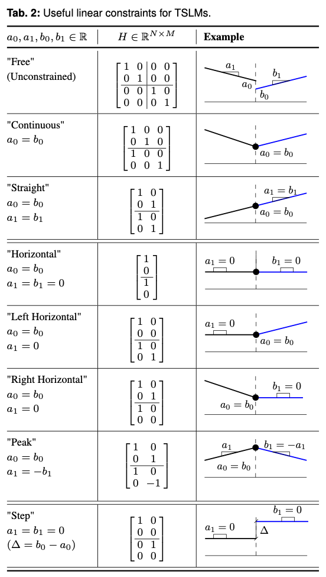

Bases: ABC
flowchart TD
lmlib.statespace.applications.TSLM[TSLM]
click lmlib.statespace.applications.TSLM href "" "lmlib.statespace.applications.TSLM"
Full implementation of the Two-Sided Line Model (TSLM) as published in "Onset Detection of Pulse-Shaped Bioelectrical Signals Using Linear State Space Models" [Waldmann2022].
Comprehensive examples on how to apply TSLMs are provided at Onset and Peak Detection With Two-Sided Line Models (TSLMs).


Methods:
-
create_cost–Returns a TSLM (Two Sided Line Model) Cost Model
Attributes:
-
H_Free–ndarray: Defines constrain matrix \(H\) of type"Free", see [Waldmann2022]. -
H_Continuous–ndarray: Defines constrain matrix \(H\) of type"Continuous", see [Waldmann2022]. -
H_Straight–ndarray: Defines constrain matrix \(H\) of type"Straight", see [Waldmann2022]. -
H_Horizontal–ndarray: Defines constrain matrix \(H\) of type"Horizontal", see [Waldmann2022]. -
H_Left_Horizontal–ndarray: Defines constrain matrix \(H\) of type"Left_Horizontal", see [Waldmann2022]. -
H_Right_Horizontal–ndarray: Defines constrain matrix \(H\) of type"Right_Horizontal", see [Waldmann2022]. -
H_Peak–ndarray: Defines constrain matrix \(H\) of type"Peak", see [Waldmann2022]. -
H_Step–ndarray: Defines constrain matrix \(H\) of type"Step", see [Waldmann2022].
Methods¶
staticmethod
¶
Returns a TSLM (Two Sided Line Model) Cost Model
Sets up Composite Cost (CC) Model using two ALSSM straight line models (AlssmPoly of order 2) and 2 concatenated segments with exponentially decaying windows to instantiate a TSLM.
gs[0] gs[1]
__,---> <---.__
--------------------
A_L | c_L | 0 |
--------------------
A_R | 0 | c_R |
--------------------
: : :
a=ab[0] 0 b=ab[1]
Parameters:
-
ab(array_like of integer, of shape (2,)) –Array/Tuple of two integers defining the left and right boundary of the left line model and the right line model, respectively. (The right boundary of the left model is set to
b=-1and the left boundary of the right model toa=0.) -
gs(array_like of float, of shape (2,)) –Array/Tuple of two floats defining the window weight of the left (
g_left = g[0]) and the rightg_right = g[0]line model, respectively.
Returns:
-
out(CompositeCost) –Object representing a TSLM (Two Sided Line Model)
Example
ccost = lm.TSLM.create_cost( ab=(-15, 30), gs=(50, 50) ) print(ccost) CompositeCost(label=TSLM) └- ['AlssmPoly(A=[[1,1],[0,1]], C=[1,0], label=left line model)', 'AlssmPoly(A=[[1,1],[0,1]], C=[1,0], label=right line model)'], └- ['Segment(a=-15, b=-1, direction=fw, g=50, delta=0, label=left segment)', 'Segment(a=0, b=30, direction=bw, g=50, delta=0, label=right segment)']